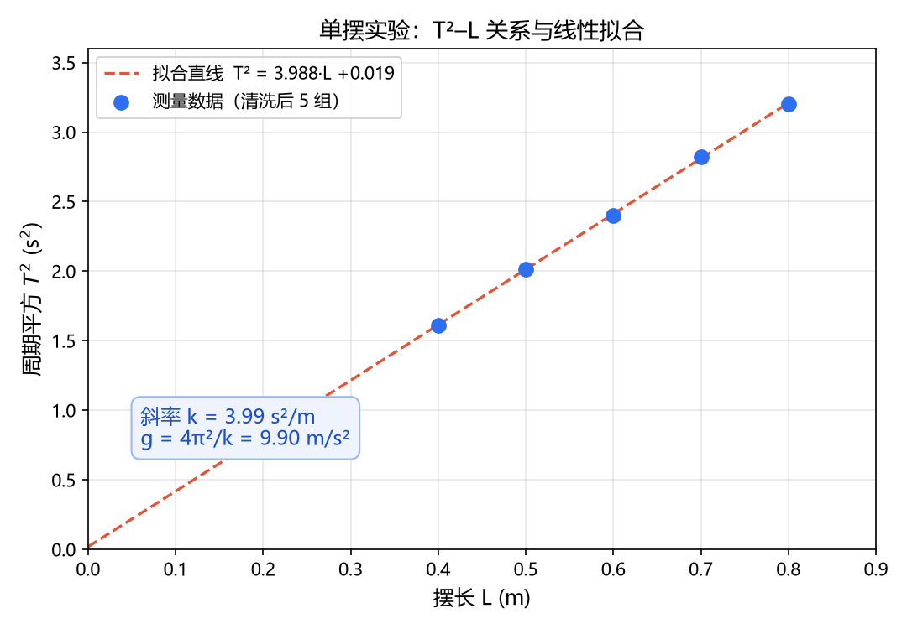

第 9 讲 Agent 操作本地软件与文件自动化
第 8 讲你认识了 AI Agent（智能体）这位"数字同事"，本讲开始真正把活交给它：读写数据文件与 Office 文档，跑通"清洗 → 计算 → 绘图 → 报告"的完整流水线——并在它出错时当好"主治医生"。
一、本讲学习目标
完成本讲后，你应该能够：
- 说明 Agent 如何"看见"你的文件：工作目录（Working Directory）与文件路径的含义；
- 用自然语言指令指挥 Agent 读写 CSV 数据文件与 Word/WPS 文档——指令写全"对谁做、做什么、做成什么样"三要素；
- 完成"数据 → 计算 → 图表 → 报告"的自动化流水线：处理单摆实验数据，得到重力加速度 g 及其不确定度；
- 读懂 Agent 的报错原文并贴回，让它自我修复；
- 用"对拍"习惯人工复核 AI 的计算结果——物理学生的专业优势。
二、课前准备
- 环境就绪：第 8 讲安装登录的 ZCode 可正常使用；回顾安全使用三原则（最小授权、危险操作需确认、重要文件先备份）——本讲要动真格的文件，三原则全程生效。
- 复习一点物理：单摆测重力加速度的原理（本讲案例的数据内核），以及大学物理实验里的"不确定度（Uncertainty）"概念——结果不能只给一个数，还要给出可信范围。
- 材料发放：课堂数据文件
danbai_data.csv（单摆周期测量数据，故意混入少量脏数据）与 Word/WPS 报告模板，由教师统一放入练习目录。 - 无需编程基础：本讲所有指令都是自然语言。你只需要说清需求与验收标准，技术活由 Agent 自己完成。
三、核心概念精讲
1. Agent 如何"看见"你的文件：工作目录
做力学实验要先选定参考系，让 Agent 动手也要先明确它的"活动范围"。Agent 并不是天生知道你电脑里有什么——它干活的位置叫工作目录（Working Directory）：当前这次会话中被限定操作的文件夹。你在哪个文件夹里启动它（或指定哪个文件夹），它就在那个范围内读写文件、建子目录。
指令里写的"相对路径"就是从工作目录出发的文件地址，好比"从实验楼出发向东 50 米"——不必写出完整门牌。例如 data/danbai_data.csv 指"工作目录下 data 文件夹里的 danbai_data.csv"。
- 我的工作目录在哪里？（拿不准就先问 Agent 一句"你当前的工作目录是哪里？"）
- 要处理的文件叫什么、在哪个子文件夹？
- 产出物放在哪、叫什么名字？
三个问题在第一条指令里交代清楚，能避免一大半"文件不见了"的翻车。
2. 办公技能仓库：让 Agent 会用表格、文档与幻灯片
第 8 讲说过，技能（Skill）是打包好的"工作方法包"，而 Agent 靠工具调用（"模型决策 → 程序执行 → 结果回传"的循环）真正动手。本讲你会直观看到两者合作的效果：围绕日常办公文件，各家 Agent 工具与开源社区维护着一批预设技能——就像新同事入职时自带的一套岗位手册。按文件类型大致分四类：
| 技能类别 | 它让 Agent 能做什么 | 物理学习中的例子 |
|---|---|---|
| 表格（Excel / CSV） | 读取数据、汇总统计、排序筛选、多表合并、条件格式、批量生成、过滤导出 | 单摆数据清洗与汇总、多次测量数据合并 |
| 文档（Word / WPS） | 按模板生成报告、插入图表与数值、批注修订 | 生成实验报告骨架、把计算结果写进模板 |
| 演示文稿（PPT） | 生成幻灯片骨架、整理要点排版 | 组会汇报初稿、路演 PPT 骨架（第 10 讲） |
| 提取文字与表格、生成 PDF 文件 | 从文献 PDF 中摘出数据表 |
预设技能的具体清单与获取方式因工具而异，以所用工具的官方文档为准。课堂上以 Claude 为例讲解这些原理，用 ZCode 演示——原理是通用的，不绑定任何厂商。
3. 指令写法三要素：对谁做、做什么、做成什么样
给 Agent 下指令，不像聊天提问，更像签一张"委托单"。一张合格的委托单有三要素：
- 对谁做（范围）：哪个目录、哪些文件——"练习目录里的
danbai_data.csv"； - 做什么（动作）：用准确的动词——清洗、计算、绘图、插入、另存为；
- 做成什么样（验收标准）：产出物的名字、格式与可检查的要求——"另存为
danbai_clean.csv，并逐条列出你改动与剔除的内容"。
"列出改动清单"这类要求看似啰嗦，其实是验收抓手：Agent 自己汇报干了什么，你逐条核对即可。这与第 7 讲任务卡的"验收标准"一脉相承——验收标准前置，结果才可检查。
4. 权限四档：把"钥匙"给到哪一级
Agent 的每个动作都在权限（只读 / 默认 / 自动审批 / 完全访问）约束下进行——权限就是你交给它的"钥匙"档位。入门材料把权限分为四档（不同工具的档位名称与具体行为略有差异，以官方文档为准）：
| 档位 | 通俗含义 | 适合场景 |
|---|---|---|
| 只读 | 只能看，不能改 | 让 Agent 检查数据、出方案 |
| 默认 | 常规操作逐次请你确认 | 课堂练习的主力档位 |
| 自动审批 | 常规操作自动放行，拦截危险动作 | 熟练之后的日常任务 |
| 完全访问 | 全部放行 | 本课程不使用 |
本讲要写文件、存图片，用"默认"档最合适：每一步都过目，既放得开手，又看得住门。这正是安全三原则的落地——练习目录内操作（最小授权）、删除覆盖需确认、重要文件先备份。
5. 报错自修复与"对拍"：让流水线跑得稳
第 8 讲拓展区介绍过智能体循环：收集上下文 → 采取行动 → 验证结果。前两步 Agent 自己能做，最后一步"验证"要人机各半——
- Agent 的自检：好的指令会让它自己复查，例如"核对改动清单与文件实际内容一致后再汇报完成"；
- 你的对拍：用独立方法抽查核验。对拍是实验物理的老传统——两套独立方法给出一致结果，才敢说数据可信。对物理学生这是专业优势：手算一组数据、做量纲检查、看截距是否合理、与公认值比较，都是低成本高收益的抽查手段。
还有一个"真跑起来之后"的现实问题——状态。一个 Agent 干了半小时：看了 25 个文件、跑了 8 次测试、改了 4 个文件，其中两条路已经试过并且失败。此刻它（和你）都必须能回答："刚才干过什么？哪条路已证明不行？文件现在是什么状态？"这已经不只是"提示词 + 工具"，而像一个真正的软件系统：要有状态、要能追踪、最好还能恢复。落到你的操作习惯上就是三条：①让 Agent 用清单和日志留痕（改了哪些文件、每步结论），别让它"全在脑子里"；②重要节点保存中间产物（清洗后的数据、生成一半的图表），断点可续、出错了不必从头再来；③像实验记录本一样，失败的路也记下来——"方案 A 已试、失败原因是什么"，这句话能帮 Agent（和下一轮的你）少走回头路。
流水线越长，中途报错越常见。报错不是坏事——它是病历，读懂病历才能对症下药：
- 读懂：报错里通常写明"哪个文件、哪一步、什么类型的问题"，先自己读一遍；
- 完整复制：把报错原文全部复制——不要只截半句或凭记忆转述；
- 贴回同一会话：补一句你刚才做了什么，让 Agent 拿着完整上下文去修；
- 重新验证：让 Agent 修完后自己再跑一遍，你按验收标准核对。
四、物理场景案例演示
课堂开场，教师会先演示一个热身任务：让 Agent 批量重命名 100 个数据文件并生成清单——感受"一句话顶一千次鼠标点击"。接下来的正餐，是一条完整的实验数据处理流水线。
场景：单摆测重力加速度
改变摆长 L，测出对应的周期 T。由单摆周期公式 T = 2π√(L/g)，两边平方得 T² = (4π²/g)·L——T² 与 L 成正比，图像是一条直线，斜率 k = 4π²/g，于是 g = 4π²/k。这就是流水线的物理内核：清洗数据 → 算 T²、拟合斜率 → 绘 T²–L 图 → 写进报告。
CSV 是一种用记事本或表格软件都能打开的纯文本数据表。字段为：序号、摆长（cm）、周期（s）、备注。数据集里故意混入了两处脏数据——下表是教学缩影（摘 6 行），已把问题位置标出；真实数据文件里没有这些标注，需要你或 Agent 自己发现。课堂发放的数据集行数更多，处理方法完全相同。
| 序号 | 摆长 (cm) | 周期 T (s) | 备注 |
|---|---|---|---|
| 1 | 40.0 | 1.27 | — |
| 2 | 50.0 | 1.42 | — |
| 3 | 60.0 | 1.55 | — |
| 4 | 0.700 | 1.68 | ⚠️ 单位不一致：此行写成了 m，应为 70.0 |
| 5 | 80.0 | 1.79 | — |
| 6 | 90.0 | 2.55 | ⚠️ 异常值：同样装置下应约 1.90，疑为计时失误 |
流水线总览与四条指令
整条流水线四步，每步一条自然语言指令（以下指令均可直接复制使用，替换成你的文件名即可——且都已在 ZCode 里真实跑通，每条指令后面的折叠区就是实测记录，含踩坑与修复过程，建议先看再仿做）：
| 步骤 | 输入 | 你要下达的指令要点 | 产出物 |
|---|---|---|---|
| ① 清洗 | danbai_data.csv | 统一单位、剔除异常值、列出改动清单 | danbai_clean.csv + 改动清单 |
| ② 计算 | danbai_clean.csv | 算 T²、拟合斜率、由 g=4π²/k 求 g 与不确定度 | result.md |
| ③ 绘图 | danbai_clean.csv | 绘 T²–L 散点图与拟合线，标注物理量与单位 | T2-L.png |
| ④ 报告 | result.md + T2-L.png + 模板 | 写入模板、插图、写结论、批注改动位置 | 单摆实验报告_AI.docx |
指令① 清洗数据——三要素齐全：对谁做（danbai_data.csv）、做什么（统一单位、剔除异常）、做成什么样（另存新文件、列出清单）。"不要覆盖原文件"就是安全三原则的落地。实测后发现两处要补：文件编码与表头要说清（否则 Agent 读错列名），行号口径要约定（"文件第几行"含表头，与表格里的"序号"差 1）：
打开练习目录下的 danbai_data.csv 逐行检查（文件为 UTF-8
编码，表头依次是：序号、摆长(cm)、周期(s)、备注）：
1. 摆长是否统一用 cm（注意有没有写成 m 的行）；
拿不准的行用周期反推摆长 L = gT²/4π² 佐证；
2. 周期是否在合理范围（本实验约 1.2–2.0 s）。
把摆长 0.700 的行改为 70.0，把周期 2.55 s 的行判为
异常值并剔除；处理结果另存为 danbai_clean.csv
（不要覆盖原文件），并逐条列出你改动和剔除的内容，
行号注明"文件第几行"（表头算第 1 行）。🧪 查看运行结果（ZCode 实测）——指令①清洗
AI Agent 真实执行并生成上述结果（执行环境：GLM+ZCode）。
读取成功：表头 ['序号', '摆长(cm)', '周期(s)', '备注']，共 6 行数据
逐行检查（摆长应统一为 cm；周期合理范围 1.2–2.0 s）：
行 序号 摆长(cm) 周期(s) 检查结论
2 1 40.0 1.27 正常
3 2 50.0 1.42 正常
4 3 60.0 1.55 正常
5 4 0.700 1.68 摆长 0.700 数值异常（其余行均 40–90），疑为 m 误作 cm；
由 T=1.68 s 反推 L≈70.1 cm，确认应为 0.700 m = 70.0 cm
6 5 80.0 1.79 正常
7 6 90.0 2.55 周期 2.55 s 超出合理范围 1.2–2.0 s；同装置 L≈0.9 m 的
理论周期 2π√(L/g)≈1.90 s，判为异常值（疑计时失误）
脏数据清单（行号 = CSV 文件行号，含表头）：
行号 | 问题类型 | 说明 | 处理建议
5 | 单位不一致 | 摆长 0.700 写成 m（应 70.0 cm），T 反推佐证 | 改为 70.0
7 | 异常值 | 周期 2.55 s 超范围（理论约 1.90 s） | 剔除该行
改动清单（原文件未覆盖，结果另存 danbai_clean.csv）：
· 第 5 行（序号 4）：摆长 0.7 改为 70.0（统一单位 m→cm）
· 第 7 行（序号 6）：周期 2.55 s 判为异常值，已剔除
danbai_clean.csv：5 行数据，摆长(cm) 列 = ['40.0', '50.0', '60.0', '70.0', '80.0']
指令② 计算 g 与不确定度——把物理公式 g = 4π²/k 明确写进指令，Agent 才会按你的口径计算；公式本身就是验收标准的一部分。实测补三处：摆长先换算成 m（不换算斜率会差 100 倍）、指定不确定度的算法口径、加一步"逐组 g 对拍"：
用 danbai_clean.csv 计算重力加速度（摆长先换算成 m）：
1. 为每组数据计算 T²（单位 s²）；
2. 对 T²–L 作最小二乘线性拟合，报告斜率 k（s²/m）
与截距 b（b 应接近 0，可作合理性检查）；
3. 由 g = 4π²/k 算出 g；不确定度用斜率标准误
传递：u(g) = g·se(k)/k；
4. 再逐组用 g = 4π²L/T² 各算一遍，作对拍对照；
5. 结果写入 result.md：包含所用公式、代入的数值、
斜率 k 与 g ± u(g)；关键数值行格式固定，
供第④步写报告时引用。🧪 查看运行结果（ZCode 实测）——指令②计算
AI Agent 真实执行并生成上述结果（执行环境：GLM+ZCode）。
第 1 步：逐组计算 T²（L 换算为 m） 组 L (m) T (s) T² (s²) 1 0.400 1.27 1.6129 2 0.500 1.42 2.0164 3 0.600 1.55 2.4025 4 0.700 1.68 2.8224 5 0.800 1.79 3.2041 第 2 步：最小二乘拟合 T² = k·L + b（手工公式计算，再用 numpy 复核） k = 3.9884 s²/m（numpy 复核 3.9884，一致）；b = +0.0186 s²（numpy +0.0186） 第 3 步：g = 4π²/k 及不确定度（斜率标准误传递） 各点残差 (s²)：[-0.0011, 0.0036, -0.0092, 0.0119, -0.0052] 残差标准差 s = 0.0094 s²；斜率标准误 se(k) = 0.0298 s²/m u(g) = g · se(k)/k = 0.0740 ≈ 0.07 m/s² 第 4 步：对拍——逐组 g_i = 4π²L/T² 的独立复核 组 1: g = 4π²×0.400/1.6129 = 9.791 m/s² 组 2: g = 4π²×0.500/2.0164 = 9.789 m/s² 组 3: g = 4π²×0.600/2.4025 = 9.859 m/s² 组 4: g = 4π²×0.700/2.8224 = 9.791 m/s² 组 5: g = 4π²×0.800/3.2041 = 9.857 m/s² 平均 9.818 ± 0.037 m/s²（与拟合结果在不确定度内一致） 最终：g = 9.90 ± 0.07 m/s²，与公认值 9.8 m/s² 相对偏差 1.0% result.md 已写入
两种算法对拍：拟合得 9.90 ± 0.07，逐组平均 9.82 ± 0.04，在不确定度范围内一致；最终结果取拟合值 g = 9.90 ± 0.07 m/s²（约 0.1 m/s² 量级），与上方"预期产出示例"及挑战⑦的手算（9.79 m/s²）全部对得上。
指令③ 绘制 T²–L 图——规定坐标轴的物理量与单位。图注齐全是物理图表的底线，也是第 10 讲互评的检查项。实测补两处：绘图库默认字体不含中文（画出来是方框，须指定中文字体）、说明文字别挡住数据点：
用 danbai_clean.csv 绘制 T²–L 图并保存为 T2-L.png：
散点表示测量数据，另画一条拟合直线；
横轴为摆长 L（单位 m），纵轴为 T²（单位 s²）；
图上标注斜率 k 的数值和由它得到的 g 值（取自 result.md）。
若图中中文显示为方框，先给绘图库指定中文字体
（如微软雅黑）再重画；说明文字不要挡住数据点。🧪 查看运行结果（ZCode 实测）——指令③绘图
AI Agent 真实执行并生成上述结果（执行环境：GLM+ZCode）。
绘图完成：散点 5 组 + 拟合线（k = 3.9884 s²/m，g = 9.90 m/s²） 已保存：T2-L.png（练习目录）——网页展示用副本另存一份

图：T²–L 拟合，斜率 k≈3.99 s²/m → g≈9.9 m/s²（与手算对拍一致）。横轴摆长、纵轴 T² 单位齐全，散点近似落在过原点的直线上——单位陷阱行与异常行剔除后，物理规律立出来。
指令④ 生成 Word 报告——先备份模板再动手；"批注列出改动"让每处修改可追溯。实测补三处：填前先列占位符（防写错栏目）、生成后读回自查（不信"已完成"）、关键数值行从 result.md 原样引用：
先复制一份"单摆实验报告模板.docx"作为备份；
然后生成"单摆实验报告_AI.docx"：
0. 先列出模板里所有【待填…】占位符，我确认
后再动手（防止写错栏目）；
1. 把 result.md 中的数据表、g 的计算结果与
不确定度写入对应栏目；
2. 把 T2-L.png 插入"数据图"一节，写编号图注；
3. 结尾用两三句话给出实验结论。
在文档末尾附一段批注，列出你改动的所有位置；
写完后重新打开文档自查：表格、图片、数值都在吗？🧪 查看运行结果（ZCode 实测）——指令④报告
AI Agent 真实执行并生成上述结果（执行环境：GLM+ZCode）。
第一次运行即报错（报错应对四步实战）：
Traceback (most recent call last):
File "step4_report.py", line 18, in <module>
g_val = float(m.group(1))
AttributeError: 'NoneType' object has no attribute 'group'
原因：result.md 里公式行是"g = 4π²/k = 39.4784/3.9884 = 9.90"，
读取规则漏了中间的除式。贴回报错原文 → 修正读取规则 → 重跑成功。
重跑输出：
已备份：单摆实验报告模板_备份.docx（模板本体此后不再触碰）
从 result.md 读到：k = 3.9884 s²/m，g = 9.9 m/s²，u(g) = 0.07 m/s²
已生成：单摆实验报告_AI.docx
读回自检：段落数 19，表格数 1（数据表 6 行），图片数 1
图注存在：True；g=9.90±0.07 已写入：True
文档实际内容（读回摘录）：
[Title] 单摆测重力加速度实验报告
[三、实验数据] 数据表如下（5 组，L 已换算为 m）；数据处理说明：原 6 组
数据，第 5 行摆长 0.700（m 误作 cm）已修正为 70.0 cm，
第 7 行周期 2.55 s（超合理范围）判为异常值剔除。
[数据表] 组 | L (m) | T (s) | T² (s²) 共 6 行（表头 + 5 组）
[四、数据图] T2-L.png 已插入（宽 14 cm）
[图注] 图 1 单摆实验 T²–L 拟合图：散点为清洗后 5 组测量数据，
虚线为最小二乘拟合直线，斜率 k ≈ 3.99 s²/m。
[五、结果与结论] 结果：g = 4π²/k = 39.48/3.99 ≈ 9.90 m/s²，不确定度
u(g) ≈ 0.07 m/s²，即 g = (9.90 ± 0.07) m/s²。与公认值
9.8 m/s² 相对偏差约 1.0%，在不确定度范围内一致……
[附] AI 改动说明：逐条列出以上全部改动位置，供人工核对
清洗后剩 5 组数据（第 4 行改为 70.0，第 6 行剔除）。拟合直线斜率 k ≈ 3.99 s²/m，由 g = 4π²/k 得 g ≈ 9.9 m/s²，不确定度约 0.1 m/s²——与公认值 9.8 m/s² 的相对偏差约 1%。（数值随数据与拟合方法而变，以课堂实际运行结果为准。）Agent 的清洗汇报应类似："第 4 行摆长 0.700 改为 70.0（统一单位）；第 6 行周期 2.55 s 判为异常值，已剔除。"这套缩影数据已在 ZCode 里真实跑通：实测 k = 3.9884 s²/m，g = 9.90 ± 0.07 m/s²，与此吻合（完整过程见上方各折叠区）。
五、课堂实操任务单
- 全程在教师指定的练习目录内操作——这是最小授权：即使指令有歧义，也不会波及练习目录之外的文件；
- 删除、覆盖、批量修改类动作逐次确认——Agent 每次要"动手改"时都看一眼再放行（默认档）；
- 重要文件先备份——原始数据
danbai_data.csv与报告模板，开工前各复制一份副本。
只负责写指令，让 Agent 干活。每完成一步，打开产物核对后在方框中打勾（勾选状态会自动保存）：
讨论（第 2 节结尾）：流水线四步里，哪些环节 Agent 干得比你好？哪些环节绝对不能交给它？——把答案带到第 10 讲的复盘。
六、常见坑与翻车案例
- 坑① 单位"看着差不多"：0.700（m）混在 70.0（cm）里，人眼极容易放过；一旦进入拟合，斜率可能差出成百上千倍，g 就全错了。解法：第一步先让 Agent 输出数据概况（每列的取值范围、有没有离群写法），确认无异常再动手处理。
- 坑② 异常值"顺手删了不说"：Agent 自作主张删数据还不报告，报告里少一组测量你却毫不知情——这不是清洗，是篡改。解法：指令里明确要求"逐条列出剔除内容"；最终报告必须写明数据处理方式。
- 坑③ "帮我处理一下数据"：没有范围、没有动作、没有验收标准，Agent 只能自由发挥，结果无法检查。解法：三要素写全——对谁做、做什么、做成什么样。
- 坑④ 看到"已完成"就交差：Agent 说"完成"不等于"完成得对"——图可能是空坐标轴，数值可能没真正写进 Word。解法：亲自打开每一份产物逐项核对，汇报只是线索，不是证据。
- 坑⑤ 一报错就重开会话：新会话里上下文全丢，Agent 要从头再理解一遍任务，越修越乱。解法：报错原文完整贴回同一会话，让它接着修（报错应对四步）。
七、自测
1. 下面哪条指令最符合"对谁做、做什么、做成什么样"三要素？
- "帮我处理一下数据。"
- "把练习目录里 danbai_data.csv 的摆长单位统一成 cm，剔除周期 2.55 s 的异常行，另存为 danbai_clean.csv，并列出改动清单。"
- "数据在文件夹里，你看着办。"
- "把文件弄好一点，谢谢。"
查看答案
B。范围（哪个文件）、动作（统一单位、剔除异常）、验收标准（另存为新文件、列出清单）三要素齐全。A、C、D 都把"决定怎么做"的责任推给了 Agent，结果无法验收。
2. 你只想让 Agent"检查数据、指出问题"，暂时不允许它改动任何文件，应选哪一档权限？
- 只读
- 默认
- 自动审批
- 完全访问
查看答案
A。"只读"档只能看不能改，天然杜绝误写误删——最小授权原则的直接应用。本讲要写文件、存图片，才升到"默认"档。
3. 单摆实验中，T²–L 图拟合直线的斜率 k 与重力加速度 g 的关系是？
- k = g / 4π²
- k = 4π² / g
- k = 2π√g
- k 与 g 无关
查看答案
B。由 T = 2π√(L/g) 两边平方得 T² = (4π²/g)·L，对照直线方程 y = kx + b，斜率 k = 4π²/g，所以 g = 4π²/k。k 的单位是 s²/m，算出的 g 才是 m/s²。
4. 判断题："Agent 汇报'清洗完成、共剔除 1 行'，就可以直接把报告交上去了。"
查看答案与解析
不可以。执行汇报只是线索，不是证据：要亲自打开产物核对（改动清单是否与文件一致），并用"对拍"抽查计算结果（手算一组对照）。记住课程原则——"AI 产出，人工把关"。
5. 简答：流水线中途 Agent 报错了，正确的应对流程是什么？
参考答案
四步：①读懂报错——哪个文件、哪一步、什么类型的问题；②完整复制报错原文——不要只截半句；③贴回同一会话——补一句你刚才做了什么，保住上下文；④重新验证——让 Agent 修完自己再跑一遍，你按验收标准核对。不要一报错就重开会话，那会丢掉全部任务上下文。
八、课后作业
用自己课程的真实数据（如力学、电磁学实验记录），或使用课堂发放的数据集，让 Agent 走完流水线，产出一份含图表的数据分析报告：
- 数据：说明数据来源；原始文件先备份，处理过程不覆盖原件；
- 流水线：完成"清洗 → 计算 → 绘图 → 报告"四步，保留每步的指令原文与 Agent 汇报；
- 报告内容：数据处理说明（改了什么、剔了什么、为什么）、至少 1 张图注完整的图、结果与不确定度、简短结论；
- 对拍记录：至少手算 1 组数据与 AI 结果对照，写明公式与代入过程；
- 过程归档：指令与迭代过程记入《AI 使用日志》。
本作业需附《AI 使用声明》：用了什么工具、让它做了什么、你如何核查。特别提醒：数据不得伪造——让 AI 剔除异常值必须如实写明，绝不能为了让结果"好看"而悄悄删数据。"AI 产出，人工把关。"
九、进阶拓展（选学）
🎓 把这条流水线沉淀成可复用的"技能"
本讲你用四条指令跑通了流水线。如果这套流程每学期要重复十几次（每次实验都出报告），每次都重新描述就太浪费了——第 7 讲说过：反复出现的工作流值得被固化。按照 Skills 开放标准的做法，可以把它打包成一个文件夹：
physics-data-skill/
├── SKILL.md ← 说明文件：技能做什么、输入输出、四步流程
├── scripts/ ← 脚本（Script）：清洗、拟合、绘图等可自动执行的程序
│ ├── clean_data.py
│ └── fit_plot.py
└── references/ ← 参考区：报告模板、数据处理规范、样例数据
├── report_template.docx
└── rules.md| 文件夹成员 | 作用 | 类比 |
|---|---|---|
| SKILL.md | 说明文件：元数据（名称、何时使用）+ 方法正文（流程与要求） | 岗位说明书 |
| scripts/ | 脚本（Script）：一段段能自动执行的程序，Agent 自己编写并运行 | 预编好的标准操作步骤 |
| references/ | 参考规则、输出模板、样例数据 | 随手册附的表格与范例 |
课程底稿里"常见表格自动化任务"换成物理场景后是这样（改写对照）：
| 通用办公场景 | 物理实验场景 |
|---|---|
| 销售数据汇总统计 | 求各组周期的平均值与不确定度 |
| 条件格式标色 | 异常值自动标色提醒 |
| 多表按编号合并 | 多次测量数据合并成总表 |
| 按模板批量生成文档 | 按模板批量出报告骨架 |
| 数据过滤导出 | 筛出合格数据组 |
至于 Agent 内部用什么技术实现（例如用什么程序库读数据、写表格，公式如何重算、错误如何校验）——这些技术选型由 Agent 自动完成，你只需要说清需求与验收标准。不同工具运行脚本的方式也不同：有的直接在本地执行，有的在隔离的沙箱（Sandbox）里运行，具体以所用工具的官方文档为准。
想拥有自己的技能？最省力的学习法是"复制样板 → 只改一处 → 试跑验证"：从预设技能仓库挑一个最简单的样板技能，复制到本地保持原结构，只改动一处（比如把示例数据换成你的实验数据），运行验证效果，再逐步扩展。许多 Agent 工具都提供创建与管理技能的入口，具体位置与用法以官方文档为准。第 10 讲的多工具协同项目，会让"技能化"的思想派上大用场。